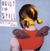
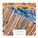
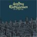
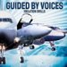
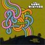
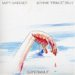

April 22, 2006
It will be nearly time for the may issue once you all get this in your email, but hey, not everyone can
do what they find enjoyable all the time. I've recently been actually working a lot at my graphic
design position in St. Paul, and was actually in charge of the office on several occasions while my boss
has moved and gone on vacation. wow. I must be more useful than I give myself credit for.
Well, I've gotten a listen in on the Matisyahu album, Youth; and it is good. Interesting
judeo-raeggae-hip-hop. I am thinking of owning this one. I first heard him play on Conan O'Brien's show,
then found some places to listen to the tracks online. A couple of weeks ago I was at the Fine Line in
downtown minneapolis, and the sound guy played the album over and over again between musical sets, I probably
heard it three complete times. I've since heard it several places since, it seems to be doing really well.
Good for Matisyahu.
So last installment I told you that my component-system-stereo stoppped working. I since had gotten myself a
new receiver, which has already decided to stop working... great. Anyway, one of these days I will be able to
own a real stereo again, and not be relegated to a boombox, headphones or my computer speakers.
As for my rather sizable acquired list, I did come into a rather sizable sum of money recently. My car was
damaged in an accident about a month ago, and I decided to forgo a car repair, and take back my broken car
(as it was still drivable) and take a lump sum from the insurance company. I got it just in time to pay
my taxes, buy some CDs, and i think some music equipment. Anyway, so on several occasions I went to the
Electric Fetus and ran a little wild. I not only bought a lot of new albums to listen to, I also found several albums
which I had never really given a chance to in the ownership of my friends.

Built to Spill's Keep it Like a Secret is one such album. I never found much
interest in the band when their praises were being sung several years ago. The first that
I really heard of the band was from their last release, Ancient Melodies of the Future.
Enjoying this album, I soon decided to go back and listen to what I had missed. I can say I now see why people
were talking up this record at the time of its release.
I have gotten a few listens in on their newest releas—You in Reverse—and it does not
carry the same sort of excitement that their previous albums do. It also has some of the worst album artwork that i
have ever seen. and i really do mean ever.

The brand new release from Crystal Skulls is not quite what I expected based on the
sounds from their debut. Outgoing Behavior's song writing is similar, and the
Skulls produced the album themselves with help from T.W. Walsh of Pedro the Lion and Headphones fame.
The new record has a more cohesive feel to it than their last, Broken Numbers, but it does lose some of
the energy.

Deadboy & the Elephantmen are a two-piece, drums and guitar, blues-rock act.
They are on Fat-Possum records, who also have put out the first several discs by
the Black Keys. They are pretty heavy, real dirty, I like them. This style of music
has been steadily growing on me. It is not quite so formulaic as say B.B.King, and is a little more relevant
to society and the times. They aren't as eclectic or as far reaching as the Black keys or the White stripes either,
they sort of rest in a middle ground of grngy blues licks and rough, baritony vocals.

Okay, so why have i never listened to Guided by Voices before??? can anyone tell me???
Sean, my employer, is of the decade ahead of mine, and is always giving praise to the indie bands of the mid
to late nineties that I was never really aware of at the time (and mostly know now through shout outs in
reviews and the few indie-radio shows available). GBV is one such group that through the end of the nineties
until just recently recorded really great songs. Rock and Roll meets the simple pop-song meets hard drinking and
on-stage fires. And not only did they write and record great songs, they apparently played intense and amazing
live shows. AND, they also have a totally awesome Derek Hess poster of this shirtless blind guy being led around
by little devil and angel cherubs whispering in his ears... wow. The point? How did I not get informed earlier?
GBV broke up about two years ago I think, but you can still hear the music of Robert Pollard on his subsequent solo
offering. I believe he plans on recording and playing for as long as he can, so we will not miss out on his music,
but i think the dynamic that his band once brought will be hard to find in anything else.
I am not sure what era of the band Isolation Drills comes from, but it does contain the one GBV
song that I have heard on the radio Glad Girls, which I am embarrased to say I originally thought was "Black Girls"
so when they sing the chorus: "hey glad girls, they only want to get you high," sounded to me like: "hey, black girls, they
only want to get you high." Perhaps a comment on the ghetto lifestlyes in our larger North American cities? i don't know,
but I thought it was strange, bordering on unbelievable, until I suddenly had the revelation that I was mishearing the lyrics.
Right. I have had some pretty ridiculous lyrical problems in my time, and this one actually rates low on the
scale of my occasioanl inability to hear properly.

Another album that I borrowed from my boss to listen to was Long Winters When I pretend to Fall.
This is another album that has some amazing pop-rock tunes on it that in there hooks and melodies and sheer simplicity amaze
me every time that I listen. It is an amazing gift to be able to write and record a song in a way that makes me want to just
hold down repeat
(for any of you that really know my listening habits, I really prefer to listen to an album in full,
so my deciding to listen to a few select tracks over the rest is a pretty special honor).
My favs off the record, Shapes, Stupid and New Girl embody this theme without scarificing intelligence in the
music or the lyrics. (New Girl uses the line, "american schools call you
starlight in 14pt type." Maybe it is just because that i do typeset in my profession, but i love things that i
think I can "get," like inside jokes or references to local places in your city (one of the reasons I enjoy
the Hold steady - the twin cities references)).

Yet another lovely Will Oldham project, Superwolf. The album artwork alone should encourage all of you to own this
record, but the simple elegance in the music and verse are worthy reasons as well. I have been trying to find "happier"
music to listen to of late, but the songs I had heard on the radio from this were too good to pass up on. though
located in the "dismal" or "depressed" spectrum of the sonic realm, these are all really beautiful songs.
Superwolf is the joint project of Matt Sweeny, who is credited with the "music",
and Bonnie "Prince" Billy, who wrote the "words" (and sings the vocals). It appears as though just the album is
called Superwolf, and the musicians are just listed by name, but I have also heard Sweeney and Oldham referred
to as Superwolf as well, so it is up for grabs if they are a "band" or just collaborators for now.
Well, it is actually May 12 now that I am finishing this up, and I have been listening to many new things since
i started this last column, so I hope i do the music and myself credit in this last installment. There will be a
"may" entry in the next week or so.
Kristian
p.s.
I am just about to go see if I can get my receiver repaired, and order a
disc changer so I won't have to use my DVD player as my CD player as well... I do not like having to change the disc
everytime I finish listening to something. I prefer just loading up and hitting play, and letting hours roll by.
I realize that I could just load everything to my computer, but I really find a difference in the experience of listening
between just hitting play in itunes, or actually physically setting everything up and hand selecting what you plan
on listening too, give the liner notes one more look over, here the click of the tray rotating between albums. It
is a much more tangible experience, draws you in, you play much more apart in it this way. I like that. It also makes me
feel more justified in owning a wall of jewelcases, and not just buying all my albums off napster, emusic or itunes
©2006 kristian bjornard * itempimoderni